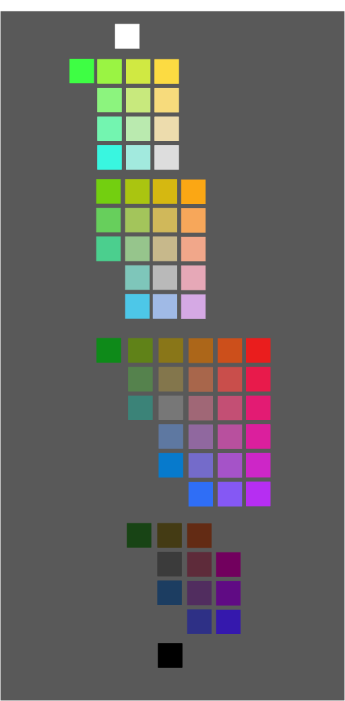

<!DOCTYPE html>
<html>

<head>
    <title>Schloss Lab Experiment</title>
    <!-- Load in the jspsych tools, plugins,and layout -->
    <script src="jsPsych/jspsych.js"></script>

    <script src="jsPsych/jspsych-image-slider-response_InstrMAS.js"></script>
    <script src="jsPsych/plugin-image-slider-response.js"></script>
    <script src="jsPsych/plugin-html-slider-response.js"></script>
    <script src="jsPsych/jspsych-image-slider-responseKM.js"></script>
    <script src="jsPsych/plugin-html-button-response.js"></script>
    <script src="jsPsych/plugin-html-keyboard-response.js"></script>
    <script src="jsPsych/plugin-survey-multi-select.js"></script>
    <script src="jsPsych/plugin-survey-text.js"></script>
    <script src="jsPsych/plugin-fullscreen.js"></script>
    <script src="jsPsych/plugin-preload.js"></script>
    <script src="imagePaths.js"></script>
    <link href="jsPsych/jspsych.css" rel="stylesheet" type="text/css">
    <script src="https://unpkg.com/@jspsych-contrib/plugin-pipe"></script>
    <script src="https://cdnjs.cloudflare.com/ajax/libs/underscore.js/1.13.1/underscore-min.js"></script>

</head>

<body>


    <!--------------------- Here is where the experiment is created ------------------------------------------->
    <script>

        var jsPsych = initJsPsych();
        var timeline = [];


        const subject_id = jsPsych.randomization.randomID(10);
        const filename = `${subject_id}.csv`;
            

        // Set background color to gray //
        document.body.style.backgroundColor = "rgb(128,128,128)"


        // make a list of all the values in the dict 'maps'
        var image_paths = Object.values(maps);
        // append the string 'patches71.png' to the list
        image_paths.push('patches71.png');
        console.log(image_paths);
        console.log(affect_list);
        var preload = {
            type: jsPsychPreload,
            images: image_paths
        };

        timeline.push(preload);

        // Initial welcome screen
        var initial_screen = {
            type: jsPsychHtmlButtonResponse,
            stimulus: 'Welcome to our experiment!' +
                '<p>At the bottom of this screen, you will see a button that says "Begin Experiment".' +
                '<br>Please only click that button when you are ready to complete the 40 minute experiment in one sitting.</p>' +
                '<p> Once you click that button, it will not be possible to restart the experiment.',
            choices: ['Begin Experiment']
        }
        // timeline.push(initial_screen);

        // timeline.push({
        //     type: jsPsychFullscreen,
        //     fullscreen_mode: true,
        // })

        var consentSign = {
            type: jsPsychSurveyMultiSelect,
            questions: [
                {
                    prompt:
                        "  <strong>UNIVERSITY OF WISCONSIN-MADISON</strong>" +
                        "  <br><strong>Research Participant Information and Consent Form</strong>" +
                        " <br><br><strong>Title of the Study:</strong> Investigating how observers perceive, interpret, and evaluate visual features in 2D scenes and 3D environments" +
                        " <br><br><strong>Principal Investigator:</strong> Karen B. Schloss (phone: 608-316-4495) (email: kschloss@wisc.edu)" +
                        "  <br><br><strong><u>DESCRIPTION OF THE RESEARCH</u></strong>" +
                        "  <br>You are invited to participate in a research study about how visual and/or tactile (touch) features influence the ability to perceive, interpret, navigate, and remember information in visual and/or touch displays" +
                        "  <br><br>You have been asked to participate because you saw a description of the study and signed up to be a participant." +
                        "  <br><br>The purpose of the research is to understand principles by which people perceive, evaluate and interpret visual and/or touch information (e.g., the meaning of parts of a scientific diagram)." +
                        "  <br><br>This study will include adults from UW-Madison and nearby areas who volunteer to participate." +
                        "  <br><br>The research will be conducted on the electronic device that you are using." +
                        "  <br><br><strong><u>WHAT WILL MY PARTICIPATION INVOLVE?</u></strong>" +
                        "  <br>If you decide to participate in this research you may be first asked to complete a standard visual acuity or color vision test.  If administered, the tests will examine your perceptual functions (e.g. color vision, and/or depth perception). You may participate in the tasks regardless of the outcome of these tests."+
                        "  <br><br>You will then be asked to partake in a task from at least one of the following three categories: (1) computer/paper tasks, (2) touch tasks, (3) virtual/augmented reality (VR/AR) tasks." +
                        "  <br><br>In computer/paper based tasks you will be presented with visual displays containing images and/or text and will be asked to make judgments about them. For example, you may see shapes and be asked how round they appear or view a graph with a legend and interpret information about the data in the graph. You may also be asked questions about information on a particular topic related to the experiment (e.g., the visual or auditory system). You will be asked to respond by making button presses on a keyboard/mouse, marks on paper, or voiced sounds. The study team may record your voice. This recording will not contain identifiable information, and will be kept for future research. Sometimes you may hear sounds (beeps or music) played at a comfortable volume though headphones or speakers. For example, you may here a tone that signals the start of the next trial. You may be asked to complete questionnaires about your expertise or educational level in a given domain (e.g., neuroscience) and questionnaires about what sorts of things you like/dislike." +
                        "  <br><br>Finally, you may be asked to respond to questions about your experience during the experiment (e.g., how much you enjoyed the task). In touch tasks, you will be asked to complete similar tasks as described for the computer/paper tasks, but rather than viewing visual displays, you will be asked to make judgments after touching textures with your hands. In VR/AR tasks you will be asked to explore virtual or augmented environments either in the Wisconsin Institute for Discovery (WID) Virtual Reality CAVE or wearing a head-mounted display (HMD), such as the Oculus Rift. The CAVE is a 6-sided 100x100x100 room. You will be able to experience 3D models of virtual environments by wearing 3D glasses that are coordinated computer with projections of images on all sides of the CAVE. You will be asked to spend up to three 15 minute sessions in the virtual or augmented environment. While in the environment, you will be asked to explore the space and make judgments about what you see. You will be asked to respond by pressing buttons on a hand-held control." +
                        "  <br><br>You will be asked to complete 2-6 surveys or tasks."+
                        "  <br><br>Your participation will last approximately 30 minutes to 2 hours per session (as specified when you signed up to participate) and will require 1 session (30 to 120 min total)." +
                        //  "  <br>If you decide to participate in this research you will be presented with visual displays containing images and/or text and will be asked to make judgments about them. For example, you may see shapes and be asked how round they appear or view a graph with a legend and interpret information about the data in the graph. You will be asked to respond by making button presses on a keyboard/mouse. You may be asked to complete questionnaires about your expertise or educational level in a given domain (e.g., neuroscience) and questionnaires about what sorts of things you like/dislike. Finally, you may be asked to respond to questions about your experience during the experiment (e.g., how much you enjoyed the task)." +
                      //  "  <br><br>You will be asked to complete 2-6 surveys or tasks." +
                      //  "  <br><br>Your participation will last approximately 5 min - 60 min per session and will require 1 session." +
                        "  <br><br><strong><u>ARE THERE ANY RISKS TO ME?</u></strong>" +
                        "  <br>If you participate in a task that involves Virtual Reality or Augmented Reality (VR/AR) either in the CAVE or using head mounted displays (HMDs) there is a chance that you may experience mild symptoms similar to motion sickness including dizziness, headaches, eye strain, or nausea. Most often, these symptoms resolve quickly, but in some cases they may last several hours before completely subsiding. The CAVE is an enclosed environment and it is possible you might experience feelings associated with claustrophobia. The experimenter will be positioned right outside the testing area at all times and will assist you if necessary. You can take breaks if you need to and you can end the experiment at any time if you feel uncomfortable." +
                       // "  <br>We don't anticipate any risks to you from participation in this study." +
                        "  <br><br><strong><u>ARE THERE ANY BENEFITS TO ME?</u></strong>" +
                        "  <br>There are no direct benefits for participating in this study." +
                        "  <br><br><strong><u>WILL I BE COMPENSATED FOR MY PARTICIPATION?</u></strong>" +
                        "  <br>Consistent with PSY 202/210/225 policies, you will receive 1.5 extra credit points/30 minutes of study participation. At the end of the semester, those extra credit points are converted such that 1 point of extra credit = 0.33% added directly to your grade at the end of term. Consult your class syllabus for additional details regarding the application of extra credit points to your final grade." +
                        //"  <br><br>If you do withdraw prior to the end of the study, you will receive no compensation." +
                        "  <br><br><strong><u>HOW WILL MY CONFIDENTIALITY BE PROTECTED?</u></strong>" +
                        "  <br>While there will probably be publications as a result of this study, your name will not be used. Typically, group characteristics will be published, but datasets with individual responses may also be shared. In such cases, the data will not be linked to your name or other identifiable information." +
                        "  <br><br><strong><u>WHOM SHOULD I CONTACT IF I HAVE QUESTIONS?</u></strong>" +
                        "   <br>You may ask any questions about the research at any time. If you have questions about the research you can contact the Principal Investigator Karen B. Schloss at 608-316-4495." +
                        "   <br><br>If you are not satisfied with response of research team, have more questions, or want to talk with someone about your rights as a research participant, you should contact the Education and Social/Behavioral Science IRB Office at 608-263-2320." +
                        "  <br><br>Your participation is completely voluntary. If you decide not to participate or to withdraw from the study you may do so without penalty." +
                        "  <br><br>By clicking the box below, you confirm that you have read this consent form, had an opportunity to ask any questions about your participation in this research and voluntarily consent to participate. You may print a copy of this form for your records." +
                        "  <br><br>Please click the box below next to the text 'I consent' to give your informed consent to participate. " +
                        "   </p>",
                    options: ["<strong>I consent</strong>"],
                    horizontal: false,
                    required: true,
                    name: 'Consent'
                },
            ],
            button_label: "Start Experiment",
        };

        timeline.push(consentSign);

        // Overview instructions of experiment
        var overview_instructions = {
            type: jsPsychHtmlButtonResponse,
            stimulus: 'Welcome! <p> This experiment involves two parts: demographic information, followed by the experimental task.' +
                '<p> It will take about 25 minutes to complete both parts.',
            choices: ['Continue']
        }
        // timeline.push(overview_instructions);

        var age_lang_demo = {
            type: jsPsychSurveyText,
            questions: [
                { prompt: "Age", name: 'Age', rows: "1", columns: "3", required: true, },
                { prompt: "Gender", name: 'Gender', rows: "1", columns: "15", required: true, },
                { prompt: "Race/ethnicity", name: 'Race/ethnicity', rows: "1", columns: "30", required: true, },
                { prompt: "List all languages you know", name: "Languages", rows: "6", columns: "60", required: true, }
            ],
            preamble: "Please answer the following questions.",
            button_label: "Done",
            randomize_question_order: false
        }
        // timeline.push(age_lang_demo);

        // Consent and demo Completion
        var demo_completion = {
            type: jsPsychHtmlKeyboardResponse,
            stimulus: "<p>Great job!</p> You have completed the consent process and answered the demographic questions." +
                "<p> Press the spacebar to continue to instructions for the experiment. </p>",
            choices: [' ']
        };

        timeline.push(demo_completion);
        var instructions = {
            type: jsPsychHtmlSliderResponse,
            stimulus: `
            <div style='text-align:left; font-size:20px; line-height:25px; width: 1200px;'>
                During this experiment you will be asked to rate how much you associate maps with\
    different concepts.<br> Below, you can see some examples of the maps you will be asked to rate. Next to the maps
    is the list of concepts.<br>You will be asked\
    to rate how much you associate each map with each concept on a scale from 'not at all' to 'very much' like the
    one below. <br><br>
    Now, please look at the list of concepts and maps. For each concept, think about the map you associate 'very
    much' with the concept.<br> \
    When you see that color during the experiment, please rate it near the 'very much' endpoint of the
    scale.<br>Now, please think about which map you associate 'not at all' \
    with each concept. When you see that color during the experiment, please rate it near the 'not at all' endpoint
    of the scale.<br>
    Please use the full range of the scale. That is, if a color is somewhat associated with the concept, you would
    click partway between the middle point and right side of the scale.\
    You will be asked to rate each map for a given concept before moving on to the next concept.<br><br>Press the
    'Continue' button when you're ready to begin four practice trials.\
    <br><br>
</div>

<div style="width: 500px; margin: 0 auto;">
    <div style="text-align: right; width: 240px; float: left;">
        <p style="font-size:25px; line-height:18px;">${affect_list[0]}</p>
        <p style="font-size:25px; line-height:18px;">${affect_list[1]}</p>
        <p style="font-size:25px;line-height:18px;">${affect_list[2]}</p>
        <p style="font-size:25px;line-height:18px;">${affect_list[3]}</p>
        <p style="font-size:25px;line-height:18px;">${affect_list[4]}</p>
        <p style="font-size:25px;line-height:18px;">${affect_list[5]}</p>
        <p style="font-size:25px;line-height:18px;">${affect_list[6]}</p>
        <p style="font-size:25px;line-height:18px;">${affect_list[7]}</p>
    </div>
    <div style="width: 240px; float: right; padding-top:15px">
        
    </div>
    <div style="clear: both;"></div>
</div>
            `,
            labels: ['Not at all', 'Very Much'],
            require_movement: false,
            step: 1,
            slider_start: 0,
            min: -200,
            max: 200,
            response_ends_trial: false,
            include_button: true,
            data: {
                image_path: 'patches71.png',
                practiceTrial: true,
            },
            slider_width: 500

        }


        timeline.push(instructions);
        console.log(affect_list)
        affect_list = jsPsych.randomization.shuffle(affect_list);
        for (i = 0; i < 4; i++) {
            let practice_concept = affect_list[0];
            let task
            if (i == 0) {
                task = "Please move the slider all the way to the <br> right endpoint of the scale"
            }
            else if (i == 1) {
                task = "Please move the slider all the way to the <br> left endpoint of the scale"
            }
            else if (i == 2) {
                task = "Please move the slider halfway between the center and right endpoint of the scale"
            }
            else if (i == 3) {
                task = "Please move the slider halfway between the center and left endpoint of the scale"
            }
            var rating_trial = {
                type: jsPsychHtmlSliderResponse,
                stimulus: `<div style="width:500px;">
                            <p style="font-size:25px;">${task}</p>
                            <p style="font-size:50px; font-weight:bold;"
                            >${practice_concept}</p>
                            <div style="width:240px; margin: auto;">
                                
                            </div>
                        </div>`,
                labels: ['Not at all', 'Very Much'],
                // slider_width: 500,
                require_movement: false,
                step: 1,
                slider_start: 0,
                min: -200,
                max: 200,
                response_ends_trial: true,
                post_trial_gap: 500,
                data: {
                    image_path: maps[i],
                    concept: practice_concept,
                    practiceTrial: true,
                    practiceTrialNum: i
                },
                on_finish: function (data) {
                    var slider_response = data.response;
                    var trialNum = data.practiceTrialNum;
                    let upperLimit;
                    let lowerLimit;
                    if (trialNum == 0) {
                        upperLimit = 220;
                        lowerLimit = 180;
                    }
                    else if (trialNum == 1) {
                        upperLimit = -180;
                        lowerLimit = -220;
                    }
                    else if (trialNum == 2) {
                        upperLimit = 110;
                        lowerLimit = 80;
                    }
                    else if (trialNum == 3) {
                        upperLimit = -80;
                        lowerLimit = -110;
                    }
                    console.log(slider_response)
                    console.log(upperLimit, lowerLimit)
                    if (slider_response <= upperLimit && slider_response >= lowerLimit) {
                        data.correct = true;
                    }
                    else {
                        data.correct = false;
                    }
                }

            };
            var rating_feedback = {
                type: jsPsychHtmlButtonResponse,
                stimulus: function () {
                    var last_resp_correct = jsPsych.data.getLastTrialData().values()[0].correct;
                    if (last_resp_correct) {
                        return "<p align='center'><b>Good job!</b> Click on 'Continue' to proceed.</p>"
                    } else {
                        return "<p align='center'><b>Not quite!</b> The slider was not placed near the instructed located. Click on 'Continue' to try again. </p>"
                    }
                },
                choices: ['Next']
            };

            var comp1_loop = {
                timeline: [rating_trial, rating_feedback],
                loop_function: function (data) {
                    console.log('data: ', data.values());
                    if (data.values()[0].correct == true) {
                        return false;
                    } else {
                        return true;
                    }
                }
            };
            timeline.push(comp1_loop);
        }

        var practice_complete = {
            type: jsPsychHtmlButtonResponse,
            stimulus: "<p>Great job! You've completed the practice trials. Now you will begin the main task.</p>",
            choices: ['Continue']
        };
        timeline.push(practice_complete);


        for (i = 0; i < affect_list.length; i++) {

            var color_order = jsPsych.randomization.sampleWithoutReplacement(_.range(Object.keys(maps).length), Object.keys(maps).length);

            var block_break0 = {
                type: jsPsychHtmlButtonResponse,
                stimulus: "<p>In this block of trials, you will be asked to rate how much you associate each map with:</p > " +
                    "<p style = 'font-size:150%; font-weight: bold'>" + affect_list[i] + "</p><br></br>",
                choices: ['Continue'],
            };
            timeline.push(block_break0);

            for (j = 0; j < Object.keys(maps).length; j++) {

                this_map = maps[color_order[j]];
                // Define concept based on current exemplar
                var concept = affect_list[i];
                var rating_trial = {
                    type: jsPsychHtmlSliderResponse,
                    stimulus: `<div style="width:500px;">
                            <p style="font-size:50px; font-weight:bold;"
                            >${concept}</p>
                            <div style="width:240px; margin: auto;">
                                
                            </div>
                        </div>`,
                    labels: ['Not at all', 'Very Much'],
                    slider_width: 500,
                    require_movement: false,
                    step: 1,
                    slider_start: 0,
                    min: -200,
                    max: 200,
                    response_ends_trial: true,
                    post_trial_gap: 500,
                    data: {
                        image_path: this_map,
                        concept: concept
                    }

                };

                timeline.push(rating_trial);
            }

            if (i == affect_list.length - 1) {
                var block_break = {
                    type: jsPsychHtmlButtonResponse,
                    stimulus: "<p>Great Job! You're done rating all concepts!<br></br></p>",
                    choices: ['Next'],
                };
                timeline.push(block_break)

            } else if (i < affect_list.length) {
                var block_break = {
                    type: jsPsychHtmlButtonResponse,
                    stimulus: "<p>Great Job! You've finished block " + (i + 1) + ".<br></br> You have " + (affect_list.length - (i + 1)) + " block(s) left to go.<br></br></p>",
                    choices: ['Next'],
                };
                timeline.push(block_break)
            }

        }

        const save_data = {
                type: jsPsychPipe,
                action: "save",
                experiment_id: "JlkVdBCimxOA",
                filename: filename,
                data_string: ()=>jsPsych.data.get().csv()
              };
        timeline.push(save_data);

        jsPsych.run(timeline);


    </script>
</body>

</html> 